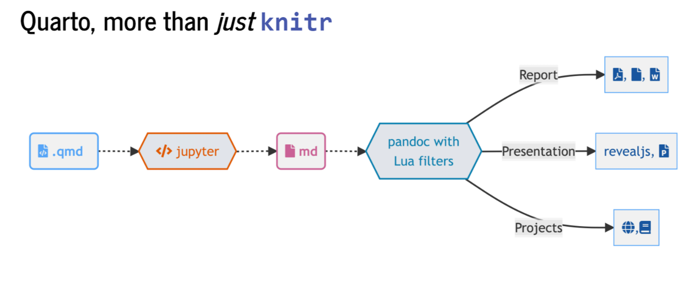

[1] "awk" "bash" "coffee" "gawk" "groovy" "haskell"
[7] "lein" "mysql" "node" "octave" "perl" "php"
[13] "psql" "Rscript" "ruby" "sas" "scala" "sed"
[19] "sh" "stata" "zsh" "asis" "asy" "block"
[25] "block2" "bslib" "c" "cat" "cc" "comment"
[31] "css" "ditaa" "dot" "embed" "eviews" "exec"
[37] "fortran" "fortran95" "go" "highlight" "js" "julia"
[43] "python" "R" "Rcpp" "sass" "scss" "sql"
[49] "stan" "targets" "tikz" "verbatim" "ojs" "mermaid"
[55] "include" ¡Bienvenidos a (R Markdown) Quarto!
R Markdown
R Markdown (https://rmarkdown.rstudio.com/) empezó en 2012 con el objetivo de facilitar la reproducibilidad en R. Ha sido desarrollado principalmente por Yihui Xie. R Markdown es un formato de archivo para crear documentos dinámicos con R que se apoya en knitr (paquete para generación de informes dinámicos en R) y Pandoc (conversor de documentos).
R Markdown utiliza programación literaria, un paradigma de programación creado por Donald E. Knuth que consiste en escribir la lógica del programa en un lenguaje humano (p. ej. inglés, castellano) con fragmentos de código e instrucciones. R Markdown está escrito en Markdown y contiene partes de código de R (o algún otro lenguaje de programación) integrado. Algunas de las razones por las que es recomendable utilizar R Markdown son la reproducibilidad, el aumento de la eficiencia de trabajo (a medio-largo plazo), centrarse en el texto sin perder tiempo en el diseño y la producción de documentos de alta calidad.
Fundamentos básicos de R Markdown
Para crear un archivo R Markdown: File -> New File -> R Markdown. Debemos cambiar el modelo mental: ahora tendremos un documento fuente de texto plano y a partir de dicho documento generamos un documento renderizado. Estos archivos tienen 3 componentes principales: (i) metadatos, (ii) texto, (iii) código
Metadatos: se escriben entre
`---`al comienzo del archivo. Utiliza la sintaxis de YAML (Yet Another Markup Language). Se utiliza para evitar teclear manualmente todas las opciones que pueden afectar al código, al contenido y al proceso de renderizado cada vez que renderizamos el archivo. ¡La sangría es importante!Texto: sintaxis Markdown. Markdown es un formato de texto plano que está diseñado para ser fácil de escribir y, aún más importante, fácil de leer.
Código (2 tipos):
Code chunk (bloque de código): se escribe
```{r} codigo aqui```; entre corchetes se indica el lenguaje. Se puede escribir manualmente, utilizar el atajoCtrl + Alt + I(OS X:Cmd + Option + I), utilizar el comandoInsert Code Chunken la barra de herramientas del editor o utilizar la paleta de comandosCtrl + Shift + P(OS XCmd + Shift + P).Inline (en línea): se escribe
codigo aqui
Para compilar un archivo, se ejecuta el botón de Render o Knit en RStudio (atajo: Ctrl + Shift + K; OS X Cmd + Shift + K), que llama a Quarto/R Markdown render en un trabajo de fondo. Esto evita que el renderizado abarrote la consola de R, y así es fácil de detener.
üëÄ Con el editor visual de RStudio puedes ves en tiempo real c√≥mo es la conversi√≥n a word, HTML‚Ķ
Opciones de chunk: https://bookdown.org/yihui/rmarkdown/r-code.html
Son compatibles con muchos lenguajes de programación:
x = "R mola!"
print(x.split(" "))['R', 'mola!']library(ggplot2)
names(cars)[1] "speed" "dist" ggplot(cars, aes(speed, dist)) +
geom_point() +
geom_smooth()`geom_smooth()` using method = 'loess' and formula 'y ~ x'
Para buscar ayuda: Help -> Markdown Quick Reference (italics, bold, headers, lists, links, images, R codes, tables, page break, superscripts…)
Formato: negrita, cursiva, subíndice1, superíndice2, codes, hypervínculo, notas al pie1
Títulos: # primer nivel; ## segundo nivel…
Listas y sublistas: *, -, +
Citas:
“R Markdown es maravilloso pero ojo con Quarto”
— Julen Astigarraga
Fórmulas:
\(f(os) = {esta \choose gustando} esto^{?} (1-p)^{n-k}\)
Comentarios:
Tablas:
| Col1 | Col2 | Col3 |
|---|---|---|
Figuras:

Videos:
üìùEjercicio 4.1
Genera un documento R Markdown que esté compuesto por al menos metadatos, código y texto. También puedes añadir otros elementos, como tablas.
Quarto
Quarto (https://quarto.org/) es un sistema de publicación científica y técnica de código abierto construido sobre Pandoc. Convierte los formatos de texto plano o los formatos mixtos (p. ej. .qmd, .Rmd, .md, .ipynb) en informes estáticos PDF, word, HTML, etc. Puede entrelazar texto narrativo y código para producir resultados con un formato elegante en forma de documentos, páginas web, entradas de blog, libros, etc.
La extensión de Quarto es .qmd y utiliza filtros Lua que es el lenguaje de extensión de Pandoc (https://quarto.org/docs/extensions/lua.html). Para ello, Quarto utiliza un engine como knitr para ejecutar el código y generar una salida temporal .md. El archivo .md se procesa mediante Pandoc y los filtros Lua de Quarto + Bootstrap CSS para HTML o LaTeX para PDF.

R Markdown vs. Quarto
La diferencia principal de Quarto respecto a R Markdown es que se ha generado para la colaboración de más de una comunidad (es decir, no solo usuarios de R o Python) y utiliza una sintaxis y formato compartido entre distintos lenguajes. Además, a medida que se añadían más capacidades a R Markdown a través de paquetes externos de R, la sintaxis para las tareas básicas se volvía incoherente.


Algunas diferencias entre Quarto y R Markdown en cuanto al código:
Estructura
key: value#|sintaxis (hash pipe). Esta es la sintaxis preferida de Quarto, aunque es compatible con la sintaxis anterior de R Markdown. El hash pipe le añade más consistencia entre los engine (Jupyter, knitr) y nos da más control sobre el orden o espacio de las opciones del chunk (no está limitado a una línea de opciones). No hay ningún atajo para un hash pipe pero si escribes uno los siguientes se añadirán automáticamente cuando le das a enter.Tabulación enriquecida: inicias una palabra y tabulas para completar o
Ctrl + espaciopara ver todas las opciones disponibles.
2 * 2[1] 4- Baterias incluidas: Quarto viene preinstalado con las últimas versiones de RStudio. No se tiene que instalar diferentes paquetes para crear diferentes formatos de salida: https://quarto.org/docs/output-formats/all-formats.html
¿Por qué utilizar Quarto en lugar de R Markdown?
Baterias incluidas
Sintaxis compartida (elige tu propio editor y lenguaje preferido)
Mejores características y más mejoras en el futuro (R Markdown todavía se mantiene, pero la mayoría de las nuevas características serán incorporadas en Quarto)
üìùEjercicio 4.2
Genera un documento Quarto que también esté compuesto por al menos metadatos, código y texto. ¿Qué diferencias observas respecto al de R Markdown?
Renderización
Existen tres formas para renderizar un documento en Quarto:
Dentro de RStudio puedes seguir usando el botón de Render (antes knit, pero ahora llamado Render por consistencia)
En el shell mediante quarto render: ü§ì
quarto render archivo.qmd (por defecto a HTML)
quarto render archivo.qmd --to pdf
quarto render archivo.qmd --to docx
quarto --help
Sobre la importancia del YAML:
quarto render archivo.qmd --to html
quarto render archivo.qmd --to html -M code-fold:true
- En la consola de R mediante el paquete
quarto
library(quarto)
quarto_render("archivo.qmd")
quarto_render("archivo.qmd", output_format = "pdf")
¿Qué hago con mi .Rmd o .ipynb existentes?
¡No pasa nada! La mayoría de los .Rmd o .ipynb existentes se pueden convertir as-is a través de Quarto. Para hacerlo a través de la línea de comandos de la terminal se escribe:
quarto render archivo.Rmd --to html
Además existen distintas opciones para convertir archivos .Rmd a .qmd:
Cambiar
.Rmda.qmd(esto siempre usará Quarto para la renderización)Cambiar la salida YAML:
html_documentaformat: htmlknitr::convert_chunk_header("archivo.Rmd", "archivo.qmd")
No tienes que convertir la sintaxis de todos tus documentos antiguos. Quarto es compatible con versiones anteriores de R Markdown.
üìùEjercicio 4.3
Convierte todos los archivos del ejercicio 4.1 a .qmd y renderizalo a HTML y word mediante la opción de renderización que más te guste.
Generando el documento final
Formato
Títulos coloreados en azul, el texto no está a doble espacio, no hay números de línea y… ¡manuscrito rechazado! ¡PERO NO VAMOS A EDITAR NADA EN WORD! Podemos asegurarnos de que el .docx creado tenga siempre el formato deseado utilizando una plantilla .docx. Para utilizarla, la plantilla debe colocarse en la misma carpeta que el archivo .qmd y debemos hacer un pequeño ajuste en el YAML.
Primero generamos la plantilla:
quarto pandoc -o plantilla.docx \ --print-default-data-file reference.docxModificamos la plantilla generada como la queramos
Lo añadimos al YAML
format:
docx:
reference-doc: plantilla.docxReferencias
Para introducir citas y referencias en nuestro texto en Quarto utilizaremos BibTeX y así evitaremos tener que hacerlo manualmente. Con BibTex, en lugar de escribir la cita se escribe una “clave” única (clave de citación: @cita) cada vez que se cita una referencia. Esto permite a los autores cambiar los estilos de las referencias sin tener que reformatear nada manualmente (por ejemplo, si hay que enviar un manuscrito a una revista diferente para su publicación).
üëÄRecomendamos utilizar Zotero como gestor bibliográfico porque está incluido en RStudio, lo que facilita la inclusi√≥n de citas y referencias, pero se puede utilizar cualquier otro gestor.
- Si queremos añadir las referencias en algún lugar concreto del archivo (ver código fuente)
üìùEjercicio 4.4
Genera una plantilla y modifica los colores, tamaño de los títulos, etc. Después, añadelo al YAML. Añade alguna referencia en el documento y renderizalo. Por último, sube este documento al repositorio de GitHub.
Información adicional
Session Info
Sys.time()[1] "2022-11-30 16:48:33 CET"git2r::repository()Local: main C:/Users/julen/OneDrive/Escritorio/GitHub-col/intro_git-github
Remote: main @ origin (https://github.com/Julenasti/intro_git-github.git)
Head: [3afc561] 2022-11-30: comentarios Vero en quartosessionInfo()R version 4.2.1 (2022-06-23 ucrt)
Platform: x86_64-w64-mingw32/x64 (64-bit)
Running under: Windows 10 x64 (build 19044)
Matrix products: default
locale:
[1] LC_COLLATE=English_United Kingdom.utf8
[2] LC_CTYPE=English_United Kingdom.utf8
[3] LC_MONETARY=English_United Kingdom.utf8
[4] LC_NUMERIC=C
[5] LC_TIME=English_United Kingdom.utf8
attached base packages:
[1] stats graphics grDevices utils datasets methods base
other attached packages:
[1] ggplot2_3.3.6 reticulate_1.25 knitr_1.40.1
loaded via a namespace (and not attached):
[1] Rcpp_1.0.9 git2r_0.30.1 compiler_4.2.1 pillar_1.8.1
[5] tools_4.2.1 digest_0.6.29 nlme_3.1-157 jsonlite_1.8.0
[9] evaluate_0.16 lifecycle_1.0.3 tibble_3.1.7 gtable_0.3.0
[13] lattice_0.20-45 mgcv_1.8-40 pkgconfig_2.0.3 png_0.1-7
[17] rlang_1.0.6 Matrix_1.4-1 DBI_1.1.3 cli_3.3.0
[21] rstudioapi_0.13 yaml_2.3.5 xfun_0.32 fastmap_1.1.0
[25] withr_2.5.0 dplyr_1.0.9 stringr_1.4.1 generics_0.1.3
[29] vctrs_0.5.0 htmlwidgets_1.5.4 rappdirs_0.3.3 tidyselect_1.1.2
[33] rprojroot_2.0.3 grid_4.2.1 glue_1.6.2 here_1.0.1
[37] R6_2.5.1 fansi_1.0.3 rmarkdown_2.16 farver_2.1.1
[41] purrr_0.3.4 magrittr_2.0.3 splines_4.2.1 scales_1.2.1
[45] htmltools_0.5.3 ellipsis_0.3.2 assertthat_0.2.1 colorspace_2.0-3
[49] labeling_0.4.2 utf8_1.2.2 stringi_1.7.8 munsell_0.5.0 References
Footnotes
hello world↩︎